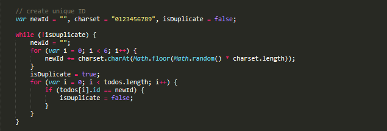

Introduction
The purpose of this documentation is to provide information on an enhanced to-do app.
For lack of a better name, the to-do app in question is simply a task management application built in JavaScript.
It allows users to add, edit, delete, or mark tasks as complete. With the filter mechanism, users are also able to see
active and completed tasks in a simple and organised way.
Access full application and code (GitHub) repository using the links below:
- The to-do app: To-do
- GitHub repo: OC-Project8-todo-list-app
Getting Started
Project files are available for download on GitHub.
Downloading the files
To download files, use the following GitHub link:
- https://github.com/alexandreformoso/OC-Project8-todo-list-app
- At the top (right corner) of the page, find and click the Clone or download button
- Select your preferred way to download
- Follow steps 1 & 2 above
- Copy the URL provided (blue highlight - image below)
- In your command line, root to your preferred location in the file system
- In your command line, run git clone [URL]
- Please note that you before making any changes to the project (eg.: Git commits), make sure you initialise the folder as your local repository. To accomplish this simply run git init within your project folder, and then run ls -la to see the hidden .git folder listed for confirmation.
Previewing the app
Once you have downloaded the project files, follow these last steps to preview the app:
- Download and install Node.js in your machine
- In your command line, run npm install to install project dependencies
- Open the index.html file from your todo-list-app folder
A little more about the to-do app
A fun fact about this to-do app is that it uses (browser) local storage, which means user data is persisted even after the browser is closed/refreshed. Data stored in local storage does not expiry.
Fixing Bugs
A couple of bugs were found and fixed from the following files:
- todo-list-app/js/controller.js
- todo-list-app/js/store.js
controller.js
[ Line 95 ]
A typo, adddItem, found and corrected with addItem (Controller.prototype.addItem)
store.js
[ Lines 83-89 ]
A duplicated ID created by the following code:
[ Lines 91-105 ]
... replaced and fixed by the following code:

Adding Tests
JavaScript unit tests were added using the Jasmine testing framework.
The file containing the tests, ControllerSpec.js, can be found in todo-list-app > test folder.
To preview the tests in the browser, make sure to install project dependencies first and then open the
SpecRunner.html file encountered in the test folder.
Analysing Our Site's Performance
Here, we are going to measure load and performance of our todo app against a competitor's using DevTools. We will then see ways in which we can optimise perfomance for end users.
Please note that gatherings may differ from user to user, depending on one's set up. This audit was run on a 64-bit Windows 10 machine, using the Incognito mode (to avoid noise) of the Google Chrome v.79 (chrome://version/) browser.
Our todo app

Startup Time
The Network panel shows when resources loaded in, in which order they loaded, and how long they took to
load.
It is a great place to start to see if resources are being downloaded as expected.
For out todo app, the Network Log (image on the left below) shows that only 10 requests were
made in the 13.6KB of downloaded (or transferred) data, and overall only took 174ms of load time.
Mobile CUP Simulation (Network: Slow 3G | CPU: 4x slowdown)
For mobile device
users with slow connectivity, load time simulated shows 4.53s (right).


Runtime Performance
Runtime performance is how your page performs when it is running, as opposed to loading.
Here, we are going to see how our todo app performs, and how we can improve potential issues.
Site Audit
Results indicate that our todo app performs well on Deskotop devices.

Performance. In the Metrics section we can see our todo app's performance. First Contentful Paint tells us that content was first painted to the screen at 1.0s, which is a good milestone in the user's perception of the page load; Time To Interactive, on the other hand, marks the point at which the page appeared ready enough to handle user interactions. Overall, the app avarages 1.0s to populate contents on the page (Speed Index) and we learn that the longest a user could potentially wait until the app is ready to take input (from First Content Paint) is 30ms, which is great.
Accessibility involves understanding how people with disability access and interact with the web pages we build. As a Web Developer, following the W3C standards on Accessibility (WCAG) and improving the semantics of our HTML will enhance the experience for users of assistive technology. Our Accessibility audit shows the following opportunity in our todo app:


Performance Improvement
We made some changes and ran a new audit. Below, we see the results.
Analysing Competitor's Site Performance
Here, we are going to measure load time of our todo app against a competitor's using DevTools. We will then see ways in which we can optimise perfomance for end users.
Please note that gatherings may differ from user to user, depending on one's set up. This audit was run on a 64-bit Windows 10 machine, using the Incognito mode (to avoid noise) of the Google Chrome v.79 (chrome://version/) browser.
Competitor's todo app
Startup Time
Looking at the Network Log, we are able to see that our competiror's website required 66 network
requests, had 893KB in transferred data,
and spent over 2 seconds on load time, a double in figures when compared to our todo application.
Too many round trips can have an impact on loading, which subsequently affect the user
experience
- evident of this is when we simulate slow mobile CPU, notice how some of the resources take over 12
seconds to be dowloaded (see images below).
Runtime Performance
To measure and optimise website performance we start with an audit.
Site Audit
Results indicate that our todo app performs well on Deskotop devices.

Performance. In the Metrics section (above) we're able to see that the first painted content takes 1.6s to appear on the screen (First Contentful Paint). However, as we are dealing with many HTTP requests, the site avarages 3.1s to populate the contents of the page (Speed Index). Consequently, this leads to 8.5s mark in the time a user has to wait until the page becomes interactive or ready to take user input (Time To Interactive) - this is considerably slow compared to our todo app's 1.1s of TTI.
Below, are the opportunities highlighted to optimise performance.
Accessibility
> Id Atributes. For best accessibility practices values of ID attributes should be unique.
Best Practices
SEO
> Accessibility compliance. Images should include alternative text to ensure users with assistive technology have a better browsering experience.
Conclusion
Overall, the tests indicate that our todo application appears to be more performance optimised than our competitors'. Suggestions for cleaner, better performaning code should be looked into.